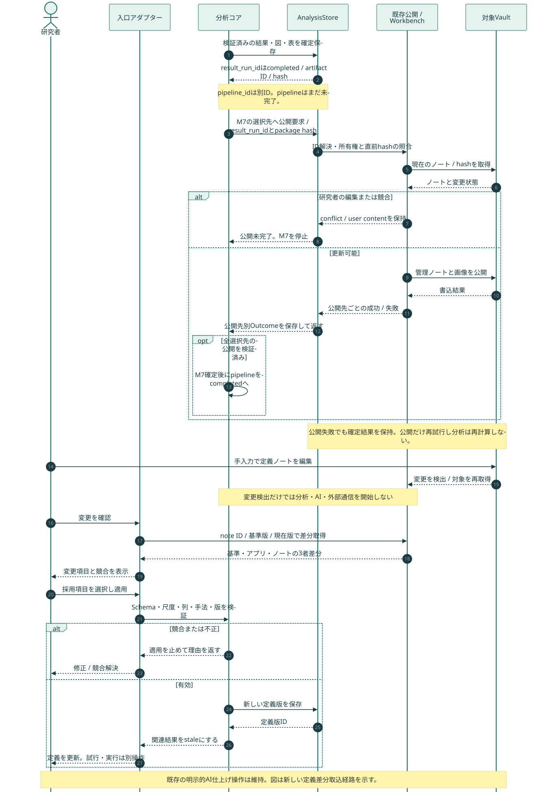
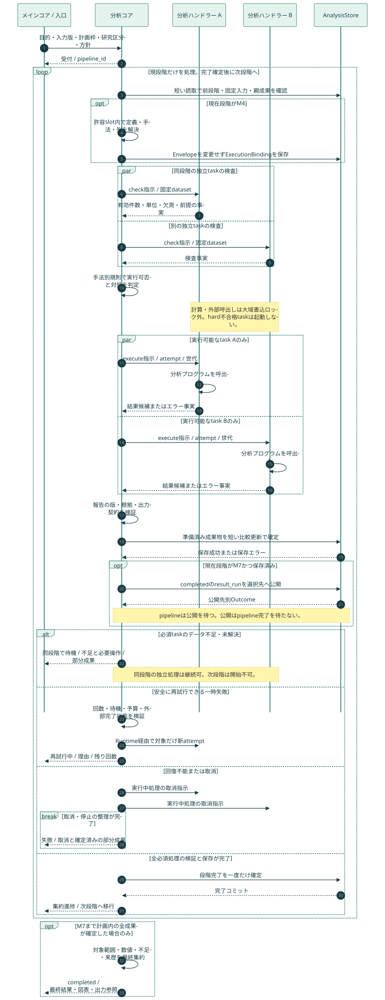
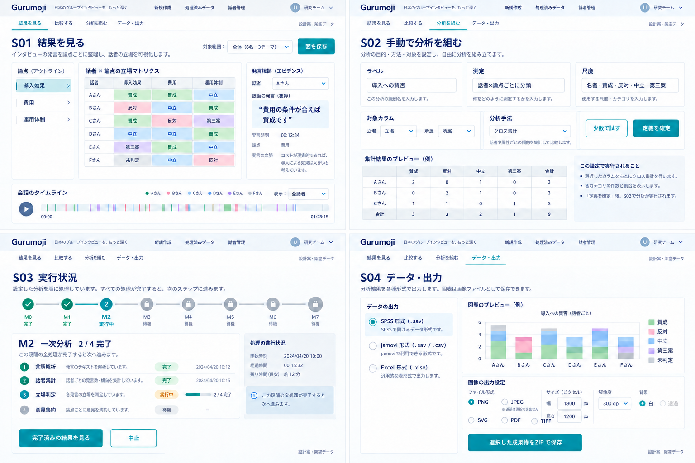

実装とテストの進行図
D0〜D7：Terraが実装・確認、Lunaが限定テスト。合格するまで次工程を実装しない。分析時のM0〜M7とは別の開発工程。

実装前の設計。Mermaid原本と、ブラウザーでレンダリングしたSVG/PNGを保存しています。
D0〜D7：Terraが実装・確認、Lunaが限定テスト。合格するまで次工程を実装しない。分析時のM0〜M7とは別の開発工程。

実行時の呼出しと契約の境界。LLMは提案し、分析コアが検証する。

確定保存後の公開、競合、手入力定義の差分取り込み。

段階内の並列、依存task、保存、失敗・再試行、段階ゲート

M0〜M7の流れとM2での並列・依存・全件待ち

手入力の定義、列・手法選択、実行、根拠、出力

原文から主張・測定・Dataset・図表・出力への接続

S01 結果 / S02 手動定義 / S03 実行状況 / S04 出力。操作・状態の詳細は構造JSONを正本とします。
